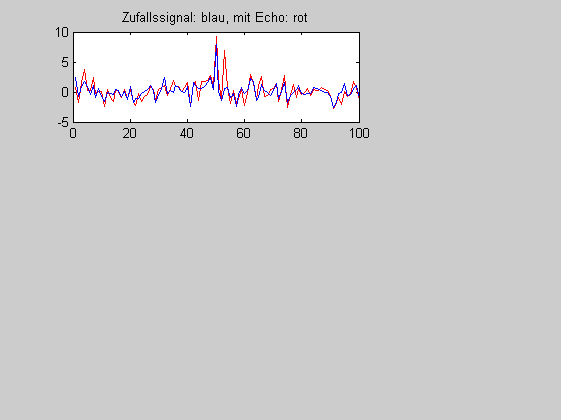
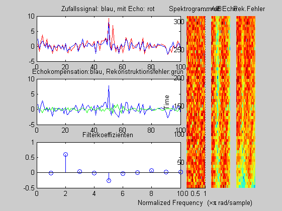

Contents
% Echokompensation % durch einen adaptiver Prädiktor % (c) HSM, B. Wir 2.8.2012 clear all; close all;
Simulation der Störung
Z = 2000 %...Werte x = randn(1,Z); x(end-50) = 8; y = filter([1 0 0 0.8],1,x); figure(1); subplot(3,9, 1:6); plot(y(end-99:end),'r'), hold on; plot(x(end-99:end)); hold off; title('Zufallssignal: blau, mit Echo: rot');
Z =
2000
 Echounterdrückung
Theorie: G(z)[1 - z^{-Delay)(W(z)] = 1
für G(z) = (1 + 0.8 z^-3) und Delay = 2
==> W(z) = 0.8 z^-1 - 0.64 z^-4 + 0.5 z^-7 - .....
==> w[k] = [0 0.8 0 0 -0.64 0 0 0.5 ....]
Adaptiver Prädiktor
N = 10; % Filterordnung+1 DELAY = 2; STEP = 0.001; w = zeros(1,N); [echo_dach,e,w] = lmsPredictor(w,DELAY, STEP,y); subplot(3,9,10:15); plot(e(end-99:end),'b'); hold on ; %error == Nutzsignal !! plot(x(end-99:end)-e(end-99:end),'g'); hold off; % Rekonstruktionsfehler title('Echokompensation:blau, Rekonstruktionsfehler:grün'); subplot(3,9,19:24); stem(w); title('Filterkoeffizienten'); WINDOW = 64; subplot(3,9,[7 16 25]); spectrogram(x,WINDOW); title('Spektrogramm/dB') subplot(3,9,[8 17 26]); spectrogram(y,WINDOW); title('... mit Echo'); axis off; subplot(3,9,[9 18 27]); spectrogram(echo_dach,WINDOW); title('... Rek.Fehler'); axis off;
Hinweis: Adaptive ARMA-Filter und RLS-Abgleich
sind für die Anwendung (noch) besser geeignet.